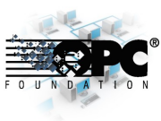
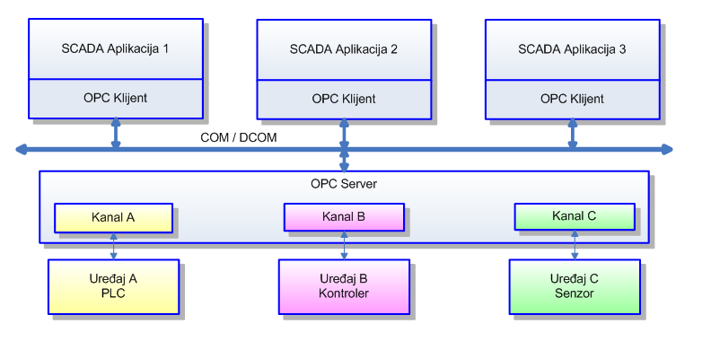

Dosadašnji sustavi automatizacije podrazumijevali su komunikacije između uređaja na razini automatizacije u polju i nadzornih sustava koji su se temeljili na komunikacijskim protokolima svojstvenim sklopovlju uređaja koje povezuju. Takav način povezivanja zahtijevao je isporuku ili izradu specifičnih komunikacijskih programskih sučelja (software driver-a) za svaki uređaj u sustavu. Zbog toga je krajnji kupac kupovao skup sustav čije je održavanje i eventualno proširenja bilo komplicirano i skupo. Rješenje se ogledavalo u razvoju standardnog sučelja koji će omogućiti jednostavnu primjenu (plug & play) te jednostavno održavanje i buduće proširenje. Takav standard trebao je biti prikladan i za jednostavne i za složene sustave koji bi se gradili na osnovu otvorene i unificirane komunikacije od osnovne razine automatizacije do složenih informacijskih sustava. Rješenje je ponuđeno kao novi koncept baziran na OPC tehnologiji što skraćenica (OLE for Process Control) koja označava Microsoft tehnologiju OLE (Object Linking and Embedding) primijenjenu u kontroli procesa. Iz toga slijedi kompatibilnost OPC tehnologije sa MS Windows aplikacijama i činjenica da je moguće izraditi veoma prikladne i cijenom povoljni male aplikacije vizualizacije bazirane na Microsoftovoj tehnologiji
{kind=link}
Arhitektura informacijskog sustava u procesnoj industriji
Uvođenjem inteligentnih uređaja u postrojenjima kao dijelova sistema vođenja nadzora i upravljanja pojavljuje se obilje informacija, o uređajima ali i o postrojenju, koji nisu prije bili raspoloživi. Ove informacije osiguravaju podatke o stanju uređaja, njegovim konfiguracijskim parametrima te okruženju u kojem se uređaj nalazi. Spomenute informacije se trebaju prikazati korisniku na konzistentan način. Brigu nad njima preuzimaju procesna računala (PLC-i) koristeći suvremene industrijske računalne mreže kao podatkovne magistrale na razini postrojenja (polja). Instaliranje distribuiranih sistema upravljanja (DCS) i SCADA sustava sa zadaćom da nadziru upravljanje procesima čine ove podatke raspoložive i u elektronskoj formi, za razliku od ranijih sustava kada su mnogi od njih bili ručno prikupljani i zapisivani. Zahtjev za kontrolom financijskih aspekata proizvodnih procesa ostvaruje se integracijom ovih prikupljenih informacija iz procesa u poslovne sustave. Držeći se ovih smjernica pri razvoju informacijskih sustava u procesnoj industriji dolazimo do tipične arhitekture sustava u kojoj uočavamo tri osnovne razine:
- Poslovni menedžment
- Menadžment procesa
- Menadžment u postrojenju (polju)
{kind=link}
OPC – novi koncept sustava automatizacije
Dosadašnji sustavi automatizacije podrazumijevali su komunikacije između uređaja na razini automatizacije u polju i nadzornih sustava koji su se temeljili na komunikacijskim protokolima koji su bili svojstveni sklopovlju uređaja koje povezujemo. Takav način povezivanja zahtijevao je isporuku ili izradu komunikacijskih programskih sučelja (software driver-a) za svaki uređaj u sustavu. Ta programska sučelja isporučivala su se u sklopu SCADA sustava samo za poznatije uređaje (PLC, mjerni uređaji, itd.). Često se događalo da potrebe povezivanja nekih specifičnih, a često vrlo važnih, uređaja u sustav predstavlja tešku a nekad i nepremostivu poteškoću. U tom slučaju koristili su se takozvani konverteri protokola koji su često bili skuplji od samih uređaja. Te i slične poteškoće poskupljivale su složenije sustave, te tako pridonijele opće priznatom mišljenju da se složenija sustavi automatizacije ekonomski ne isplate.
{kind=link}
Cijene integracija različitih podsustava znatno su rasle zbog činjenice da je za svaki uređaj bilo potrebno izrađivati posebno programsko sučelje. Statistike govore da je za programski razvoj tipične nadzorno – kontrolne aplikacije bilo potrebno utrošiti za pisanje programskog sučelja oko 25-30% inženjerskog razvojnog vremena. Integratori sustava trošili su veoma mnogo razvojnog vremena za takve poslove te je konačna cijena sustava bila skupa kao i održavanje budući da je zahtijevalo specijalistička znanja. Rezultat tog je bio da je krajnji kupac kupovao skup sustav čije je održavanje i eventualno proširenja bilo isto tako komplicirano i skupo. Rješenje se ogledavalo u razvoju standardnog sučelja koji će omogućiti jednostavnu primjenu (plug & play) te jednostavno održavanje i buduće proširenje. Takav standard trebao je da bude prikladan i za jednostavne i složene sustave koji bi se gradili na osnovu otvorene i jednostavne komunikacije od osnovne razine automatizacije do složenih informacijskih MIS sustava (Management Information System).
{kind=link}
Rješenje je ponuđeno kao novi koncept baziran na OPC tehnologiji. Na priloženim slikama prikazana je razlika novog koncepta OPC strukture (Sl. 2a) i stare komunikacijske strukture (Sl. 2b). Terminologija OPC izvodi se kao skraćenica (OLE for Process Control) koja označava Microsoft tehnologiju OLE (Object Linking and Embedding) primijenjenu u kontroli procesa. Iz toga slijedi kompatibilnost OPC tehnologije sa MS Windows aplikacijama i činjenica da je moguće izraditi veoma prikladne i cijenom povoljni male aplikacije vizualizacije koje kao podlogu (OPC Client) koriste npr. neku od komponenata MS Office paketa (npr. Excel). Tijekom protekle decenije OPC je postao industrijski standard kojeg razvijaju najuglednije svjetske kompanije sa područja automatizacije u suradnji sa tvrtkom Microsoft. U tom smislu osnovana je neprofitabilna zaklada OPC Foundation koja okuplja preko 150 članova, pretežno svjetski poznatih razvojnih ustanova i tvrtki. OPC tehnologija se temelji na već spomenutom Microsoft OLE (ActiveX) tehnologiji i komunikacijskim modelima COM (Component Object Model) i DCOM (Distributed Component Object Model). OPC sadrži standardni set sučelja, svojstva i metoda koje se koriste u aplikacijama kontrola procesa i automatizacije. OLE/COM tehnologije definiraju se kako individualne programske komponente koje mogu međudjelovati i dijeliti podatke.
OPC specifikacije i smjernice razvoja
{kind=link}
OPC specifikacije definiraju skup sučelja (Interface) koji se lako implementiraju primjenom objektno orijentiranog programiranja i omogućava laku manipulaciju tim objektima. Softver pomoću koga korisnik upravlja procesom (Human-Machine Interface), upravljački softver ili softver za akviziciju podataka (SCADA) može obrađivati ili prikupljati podatke sa različitih računara u mreži. Specifikacije definiraju standardne mehanizme za pristupanje podacima na serveru po nazivima. Projektanti koji razvijaju hardver i softver mogu jednostavno razmjenjivati informacije pomoću širokog spektra sistemskih aplikacija, u koje se ubrajaju distribuirana kontrola sistema (DCS), SCADA sustavi, procesna računala PLC (Programmable Logical Controler) kao i razni inteligentni uređaji, povezani preko računarske mreže.
Prva verzija OPC standarda V1.0 je objavljena u kolovozu 1996. godine. Tijekom 1997. godine vršene su korekcije na standardu a krajem 1998. godine se pojavila verzija V2.0 sa značajnim izmjenama. Standard je podržan od strane najvećih svjetskih kompanija koje se bave izradom PLC-a i softvera za vizualizaciju procesa. OPC je baziran na tehnologijama OLE, ActiveX, COM i DCOM i dostupan je na 32-bitnom operativnom sistemu Microsoft Windows. Pomoću DCOM tehnologije mogu se razmjenjivati podaci (objekti) i sa drugim operativnim sistemima kao što su Unix ili Linux. Do danas je izdano desetak OPC specifikacija od kojih možemo izdvojiti tri osnovne:
- OPC Data Access (OPC DA) – Koristi se za razmjenu podataka između servera i procesne opreme u realnom vremenu. OPC Data Access je najvažnija specifikacija i sučelje koje je najviše implementiranu u svim primjenama OPC tehnologije danas. Ono omogućava čitanje i pisanje varijabli procesa u realnom vremenu.
OPC Complex Data, OPC Batch, and OPC Data eXchange (DX) su ekstenzije OPC DA servera za poboljšanu funkcionalnost. Complex Data definira način pristupa kompleksno strukturiranim varijablama procesa dok OPC Batch je specifikacija namijenjena klijentima kod slijednih (batch) procesa (S88). OPC Data eXchange (DX) specifikacija definira način razmjene podataka između DA servera kada je klijent definiran unutar servera. - OPC Alarms & Events (OPC A&E) – Omogućava pozive alarma i događaja na zahtjev za razliku od kontinuiranog protoka podataka OPC DA servera. To uključuje obradu alarma, aktivnosti operatora, informacijske poruka i poruke o praćenju procesa. Pri tome se pod pojmom Alarms i Events smatraju jednokratne poruke o stanju procesa i nedozvoljenim promjenama unutar njega.
- OPC Historical Data Access (OPC HDA) – Za razliku od OPC DA servera koji omogućava praćenje procesa u realnom vremenu OPC HDA te podatke sprema i čuva. Koristeći se OPC HDA serverom SCADA sustavi se transformiraju iz jednostavnog (data logging) sustava u kompleksne alate za praćenje i analizu procesa u bilo koje vrijeme.
{kind=link}
Od ostalih OPC XML-DA je prva OPC specifikacija koja nije bila vezana uz određenu programsku platformu kod koje je DCOM/COM komunikacija zamijenjena s HTTP/SOAP protokolima i tehnologijom web-servisa. OPC Security definira kontrole pristupa serveru da bi se zaštitile važne informacije i onemogućilo neovlašteno mijenjanje parametara procesa. OPC Commands definira mehanizme za pozivanje metode ili za izvršavanje programa putem OPC. Ova specifikacija nikada nije objavljen budući da je završena nakon što je započet rad na OPC Unified Architecture ali je sadržaj i funkcionalnost u potpunosti je uklopljen u UA.
{kind=link}
Slijedeća generacija OPC specifikacija trebala je napustiti koncept ograničene Microsoft Windows platforme a OPC Foundation bi trebala osigurati portabilnost na ostale operativne sustave. Ova specifikacija nazvana OPC Unified (OPC UA) podržava skalabilnost kompletnog protokola što omogućava implementaciju na embeded platforme za razliku od dosadašnje DCOM platforme koja troši razmjerno puno memorijskih resursa . Sadašnje specifikacije DA, A&E i HDA servera zahtijevaju zasebno memorijsko prostore adresiranje dok ih UA specifikacija ujedinjuje što pojednostavljuje programske pozive. Sigurnost današnji servera je vrlo mala jer komunikacija zahtjeva otvoren port 135. OPC Unified arhitektura predviđa sigurnosni sustav baziran na W3C specifikacijama koji uključuju autorizaciju korisnika, razmjenu digitalnih certifikata i opcionalnu enkripciju poruka.
Performanse danas korištenih servera uvelike su ograničene performansama DCOM sučelja dok novi standard predviđa mnogo bolje jer definira dvije transportne opcije:
- Web bazirani protokol SOAP (XML kodirana razmjena podataka preko HTTP) kojije u osnovi tekstualan što daje mogućnost lagane integracije u razne sustave ali je i do nekoliko puta sporiji od DCOM prijenosa
- UA binarni protokol (binarno kodirana razmjena podataka preko TCP/IP) čija brzinaje usporediva, pa čak i brža od DCOM karakteristika
Osim ovoga nova OPC UA specifikacija donosi bolje rezultate na polju robusnosti aplikacija, redundancije podataka, te mogućnosti upotrebe kompleksnih i strukturiranih podataka.